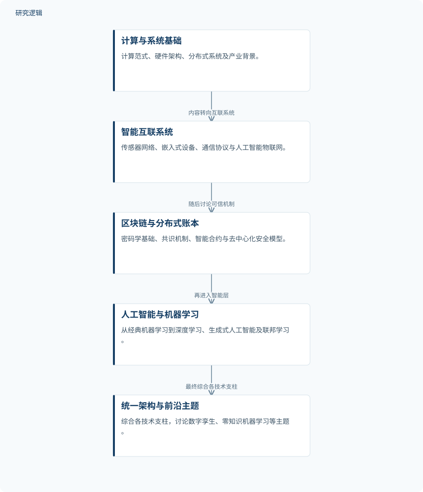

摘要解读
先进计算技术：物联网、区块链、人工智能与机器学习
ADVANCED COMPUTING TECHNOLOGIES: IoT,BLOCKCHAIN, AI, AND MACHINE LEARNING
解读更新 2026-10-17 10:18 · 依据公开摘要整理，未核验全文细节
物联网采集的数据，如何与可信机制、智能分析共同支撑数字基础设施？这部著作以物联网、区块链和人工智能的协同为主线，提供跨技术层次的阅读框架。其摘要介绍的是一本书的内容组织与目标，而非一项实验研究的性能结论。
文章目录
从单项技术走向感知、信任与决策协同
摘要将技术融合视为核心问题：物联网承担现实世界的数据采集，区块链提供不可篡改的安全层与去中心化信任，人工智能和机器学习则处理信息，支持实时、自主决策。这种分工构成全书讨论数字基础设施的基本视角。
作者关注的不只是算法本身，还包括系统设计、架构框架与部署策略。因此，阅读重点是理解不同技术在信息物理系统中的角色及联系，而不是将它们看作彼此独立的工具清单。
以基础、连接、安全和智能组织知识
摘要明确给出的是内容展开顺序，而非可复现的实验方法：全书先介绍计算范式、历史演进、硬件架构与分布式系统，再进入传感器网络、嵌入式设备和通信协议，讨论向人工智能物联网的演进。
随后，内容转向密码学基础、共识机制、智能合约和去中心化安全模型；智能层则涵盖经典机器学习、深度神经网络、Transformer、计算机视觉、生成式人工智能、可解释人工智能及隐私保护联邦学习，最后将这些内容汇入统一架构。
依据摘要整理的全书内容推进示意


仅展示摘要明确陈述的内容组织顺序，不代表实验流程、实际部署或已经验证的系统架构。
下载 SVG图示关系说明
实线表示相邻阶段的信息流，虚线表示跨阶段联系或反馈。
计算与系统基础 → 智能互联系统：内容转向互联系统；智能互联系统 → 区块链与分布式账本：随后讨论可信机制；区块链与分布式账本 → 人工智能与机器学习：再进入智能层；人工智能与机器学习 → 统一架构与前沿主题：最终综合各技术支柱
摘要呈现的是综合框架，而非实验优胜结论
摘要报告的主要内容产出，是连接基础理论与系统设计的综合性知识框架。数字孪生、零知识机器学习、智能体人工智能、量子范式和可持续计算被纳入讨论，应用案例涉及智能电网、自主交通、精准农业和数字医疗。
作者将可扩展、安全且有韧性的信息物理系统作为设计目标，并将本书定位为教材或行业参考资料。这些是覆盖范围与预期用途，不应改写成已经验证的系统效果。摘要没有提供可据以比较的性能结果。
案例如何验证，摘要尚不足以判断
仅凭摘要，无法判断案例的数据来源、样本规模、比较基线、评价指标及验证范围，也无法确定统一架构在不同场景中的实现细节。摘要未报告这些信息，不代表书中没有相关讨论；目前也不能据此断言技术融合必然改善效率、安全性或可靠性。
阅读启发：先厘清智能运维中的技术职责
阅读启发：面向智能运维，可沿着“数据如何采集、信任如何建立、智能分析如何支持决策”继续阅读，重点关注数字孪生与统一架构的衔接。摘要没有报告故障诊断或预测维护效果，因此宜将这些联系作为阅读问题，而非本书已经证实的应用结论。
以上为本站阅读启发与建议，不是论文已验证的结论。